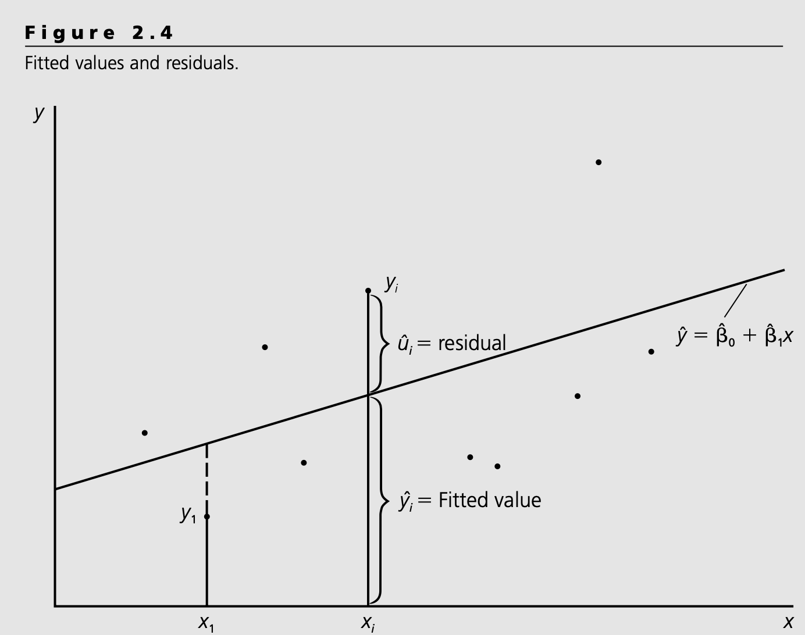
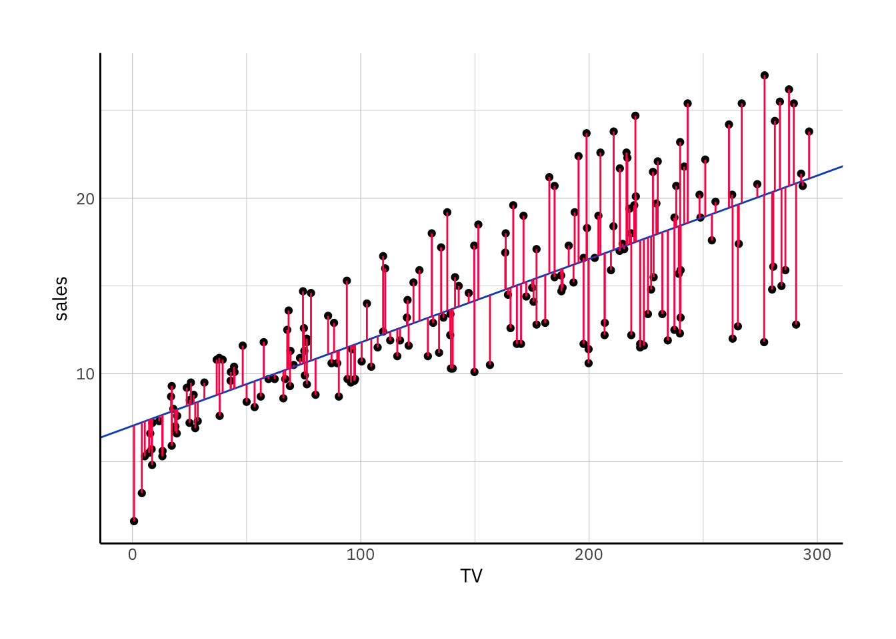

We have an idea in mind: we want to explain one response variable \(y\) varies with changes in one single predictor variable \(x\); that is we are trying to explain \(y\) in terms of\(x\).
We assume a linear relationship between \(X\) and \(Y\) and we need to write a model for it.
Now, we know that \(y\) is not effected only by \(x\)–it would not make any sense– there are some variables also effecting \(y\). That is, even if we knew the true relationship between \(x\) and \(y\)–\(f(x)\) we would not perfectly explain the variations in \(y\) with the changes in \(x\) solely. So we would have the following equation
For each observation we would have \(x\) and \(y\) values but the function would not constitute a perfect fit to data. Changes in \(x\) would not explain changes in \(y\) perfectly; so \(y\) would never be equal to the function of \(x\). So even if we knew the true function \(f\) we would not be able to predict \(y_i\) values using \(x_i\); because \(x\) is not the only variable affecting \(y\). So using our true function \(f\) we could put each observation \(x\) to the function and get some values (\(f(x)\)) which would not be equal to the true \(y\) values observed. The difference than would be the effect of other variables to \(y\); the effect which is not being explained by \(x\). For each \(x\) value we would have different values for this difference \(y - f(x)\). This difference is called error and marked with \(\epsilon\) or \(u\) symbols. So now we can get the eqaulity and write
\[
\begin{align}
y_i &= f(x_i) + u_i \\
y &= f(x) + u
\end{align}
\]
Generally our goal is to estimate \(f\) with different approaches: statistical learning.
For SLR case we make several assumptions. The most important one is the form of this function: \(f\) is linear. So we can write a simple linear regression model of:
\[
y_i = \beta_0 + \beta_1 x_i + u_i
\] or
\[
y = \beta_0 + \beta_1 x + u
\] (a.1)
\(u\) here captures all the effects except the \(x\)’s, so we refer it as unobserved. If other factors in \(u\) is zero, \(\Delta u = 0\), then \(x\) has a linear effect on y:
\[
\Delta y = \beta_1 \Delta x, \space \text{if} \space \Delta u = 0
\] So, the change in \(y\) is equal to change in \(x\) multiplied by \(\beta_1\). Now notice that this \(\beta_1\) is a constant and the changes in \(x\) are effecting \(y\) at the same rate of \(\beta_1\) no matter the rate of change or the level of \(x\); this is called the linearity–one unit change in \(x\) has the same effect on \(y\) regardless of the initial value of \(x\).
3.1.1 Assumptions about \(u\)
There is a key assumption about \(u\) that we can always make. As long as the intercept \(\beta_0\) is included in the equation, we can assume the average value of \(u\) in the population is zero: \[
E(u) = 0
\]
zero conditional mean assumption
The other assumption is regarding how \(u\) and \(x\) are related. Now we are going to assume there is no relationship between\(x\) and \(u\). We can check this relation with correlation coefficient but correlation only checks at one level of relationship: it is possible for \(u\) to be uncorrelated with \(x\) while being correlated with functions of \(x\), such as \(x^2\). A better assumption involves the expected value of u given x:
Because \(u\) and \(x\) are random variables, and they are independent from each other, for any \(x\) we can obtain the expected(or average) value of \(u\) given any value of \(x\)\[
E(u|x) = E(u) = 0
\] So zero conditional mean assumption states that for any given value of \(x\) the average of the unobservables is the same and therefore must equal to average value of \(u\) in the entire population.
Examples of Simple Linear Regression
\[
sales = \beta_0 + \beta_1 \times x + u
\]\[
wage = \beta_0 + \beta_1 educ + u
\]
For example consider the wage regression. To simplify lets assume that wage is effected only by educ and natural ability.Then the assumption \(E(u|x) = E(u) = 0\) requires \(E(abil|8) = E(ability)=0 = E(abil|16)...\); the average level of ability is the same regardless of years of education. The average ability must be same for all education levels. If we think that average ability level increases with years of education, then this assumption is false (this would happen if on average, people with more ability choose to become more educated). Now we cannot observe natural ability, we cannot measure it, we cannot take its average. But this is an issue that we must adress before applying SLR analysis.
3.1.2 Estimating the coefficients: Deriving the Ordinary least squares estimates
So our simple regression model which we think is true for the population is
\[
y_i = \beta_0 + \beta_1 x_i + u_i
\]
Since \(\beta_0\) and \(\beta_1\) is unknown before we can use the above equation to make predictions we must use sample data from the population to estimate coefficients. Let \(\{(x_i,y_i), i = 1,\dots,n\}\) denote a random sample of size \(n\) from the population.
\[
\begin{align}
\hat{\beta_1} &= \frac{\sum_{i=1}^n(x_i - \bar{x})(y_i - \bar{y})}{\sum_{i=1}^n(x_i - \bar{x})^2}\\
\hat{\beta_0} &= \bar{y} - \hat{\beta_1}\bar{x}
\end{align}
\] These coefficients are colled OLS estimates of \(\beta_0\) and \(\beta_1\). These estimates come from the approach of minimizing theleast squares criterion:
so we have \[
\hat{y_i} = \hat{\beta_0} + \hat{\beta_1} x_i
\]\(y_i\) is the prediction from each observation \(x_i\) with OLS coefficients. Now since our OLS estimates are going to be different from the real coefficients, for each observation \(x_i\)\(y_i\) and \(\hat{y_i}\) will be different. This difference is called residuals(\(\hat{u_i}\))
These residuals are the distance of each prediction from the actual value of the response. There are \(n\) residuals (\(\hat{u_i}\)) (note that these are not the same as \(u_i\)). Before going further have a look at the figure below
 \(\hat{\beta_0}\) and \(\hat{\beta_1}\) formulas come from minimizing the sum of squared residauls or residual sum of squares(RSS)
So the OLS comes from the fact that these estiamtes minimize the sum of squared residuals.
Once we determine the OLS intercept and slope estimates we form the OLS regression line, or sometimes refreed to as sample regression function (SRF)(since this function is estimated version of population regression function \(f(x)\))
\[
\hat{y} = \hat{\beta_0} + \hat{\beta_1} x
\] (a.2)
Lets use advertising data to estimate the coefficients, find the residuals, and draw the OLS regression line;
Our population regression is
\[
sales = \beta_0 + \beta_1 TV + u_i
\] The data:
New names:
Rows: 200 Columns: 4
── Column specification
──────────────────────────────────────────────────────── Delimiter: "," dbl
(4): TV, radio, newspaper, sales
ℹ Use `spec()` to retrieve the full column specification for this data. ℹ
Specify the column types or set `show_col_types = FALSE` to quiet this message.
• `` -> `...1`
lm_result %>%augment() %>%ggplot() +aes(x=TV, y = sales) +geom_point() +geom_abline(intercept = lm_result$coefficients[1], slope = lm_result$coefficients[2], color ="#0b53c1")+geom_segment(aes(xend = TV, yend = .fitted), color ="#ff0055")

For the advertising data, the least squares fit for the regression of sales onto TV. The fit is found by minimizing the sum of squared errors. Each red line segment represents a residual, and the fit make a comprimise by averaging their squares. In this case a linear fit captures the essence of the relationship, although it is somewhat deficient in the left of the plot